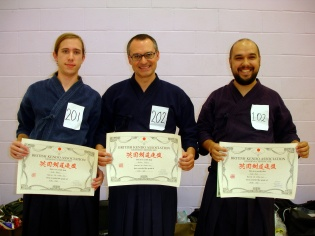

Noticias

2010.12.10
Eventos Internacionais de Iaido e Jodo previstos para 2011
Alguns eventos previstos para 2011:| 09.01.2011 | Ishido Cup (Iaido e Jodo) | Haia (Den Haag), Holanda |
| 14-17.04.2011 | Seminário de Iaido e Jodo, com Ishido Sensei | Magglingen, Suiça |
| 16-19.06.2011 | Seminário de Iaido e Jodo, com Senseis Jock Hopson e Rene van Amersfoort | Villingen, Alemanha |
| 30.06-03.07.2011 | Seminário de Iaido e Jodo, com Sensei Ishido | Gotemburgo, Suécia |
| 29.07-02.08.2011 | Seminário de Verão (Iaido e Jodo) com Sensei Ishido | Stevenage, Inglaterra |
| 16-18.09.2011 | Campeonatos Europeus de Jodo | Stevenage, Inglaterra |
| 18-22.10.2011 | Campeonatos Europeus de Iaido | Andorra La Vella, Andorra |
2010.12.07
Resultados II Taikai de Iaido de 2010
Decorreu no IDP (Instituto de Desporto de Portugal), em Lisboa, o II Taikai de Iaido de 2010. Os resultados foram os seguintes:Categoria Mudan:
1. Bruno Barros (CJIP)
2. Nelson Gama (CJIP)
3. António Sousa (CJIP)
Categoria Shodan:
1. António Costa (Zenshinkan)
Categoria Nidan:
1. Bruno Belchior (Zenshinkan)
2. 1. Nuno Martins (ICP)
3. João Pires e Luis Rascão (ambos Zenshikan)
Parabéns a todos os participantes e organização.
2010.11.22
II Taikai de Iaido de 2010
Decorre no próximo dia 5 de Dezembro, domingo, o II Taikai de Iaido de 2010, promovido pela APK.
O torneio irá ser realizado nas instalações do IDP (Instituto de Desporto de Portugal), pavilhão da Lapa a partir das 14:00.
O torneio permitirá determinar os rankings nacionais individuais de Iaido para o próximo ano, para se apurarem posteriormente os representantes portugueses nos campeonatos europeus de Iaido de 2011 (a realizar-se em Andorra), e acima de tudo, promover o convívio e a união entre os vários clubes de Iaido de Portugal.
2010.11.15
Resultados dos Campeonatos Europeus de Iaido 2010
Entre o dia 10 e o dia 14 de Novembro decorreram em Paris, na França, os campeonatos europeus de Iaido de 2010, tendo os nossos colegas regressado com mais lembranças de momentos bem passados. O Bruno Belchior, participando na categoria Shodan (1 Dan), chegou até aos quartos de final, tendo finalmente perdido o combate que conduziria à medalha de bronze.
Esta terá sido a melhor posição que Portugal já atingiu nos campeonatos individuais.
O Bruno também passou com sucesso no seu exame de Nidan (2 Dan) de Iaido, pelo que está duplamente de parabéns.
A toda a nossa equipa, com representantes de Lisboa ao Porto, um bem haja por representarem o nosso país em nome desta arte marcial que todos nós cultivamos, tanto no Zenshinkan como nos outros clubes de Portugal.
Os resultados podem ser vistos na totalidade na página oficial do torneio.
2010.11.02
Selecção Nacional para os Campeonato Europeu de Iaido 2010
 Os 17ºs Campeonatos Europeus de Iaido terão lugar este ano em Paris, França, de 10 a 14 de Novembro.
Os 17ºs Campeonatos Europeus de Iaido terão lugar este ano em Paris, França, de 10 a 14 de Novembro. Nele participarão membros do Zenshinkan, nos campeonatos individuais e por equipas.
Desde já os nossos votos de bom sucesso.
- Delegation Leader:
Joaquim Mendes
- Team Manager:
João Maia
- Categoria Yondan (4 Dan):
Joaquim Mendes (Zenshinkan-ICL)
- Categoria Sandan (3 Dan):
João Maia (Zenshinkan - ICL), Sandra Santos (CJIP)
- Categoria Nidan (2 Dan):
Francisco Beça (CJIP), António Beça (CJIP)
- Categoria Shodan (1 Dan):
Bruno Belchior (Zenshinkan - ICL)
- Equipa Nacional:
Joaquim Mendes, João Maia, Sandra Santos, e Bruno Belchior (suplente)
2010.11.01
Parabéns aos mais recentes graduados do Zenshinkan

No evento do seminário de Jodo que ocorreu nos passados dias 30 e 31 de Outubro em Darlington, Inglaterra, dois dos nossos colegas que nele participaram (João Pombo e João Pires) efectuaram o exame de graduação. Os nossos parabéns a ambos, que concluíram com sucesso os exames de Nidan (2 Dan) e Shodan (1 Dan) de Jodo, respectivamente.
Os nossos parabéns também ao nosso conhecido e amigo António Pinheiro, do CJIP no Porto, que, pela mesma ocasião foi bem sucedido no seu exame de Nidan de Jodo.
Os nossos agradecimentos também à Sandra Santos, por todo o empenho e dedicação que teve para que tudo corresse pelo melhor durante a viagem.